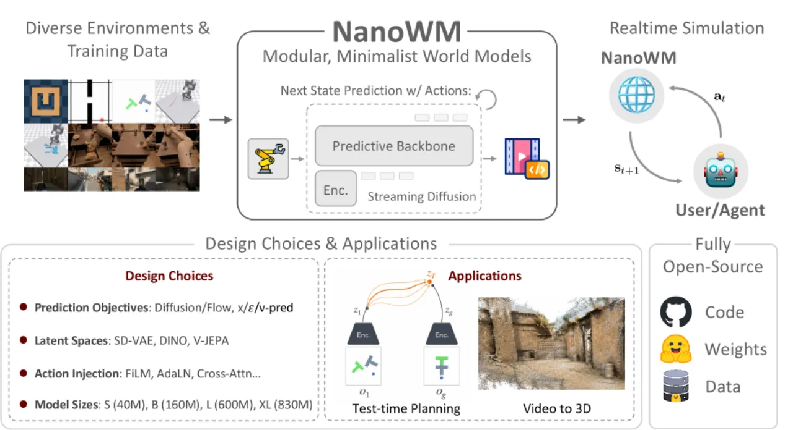
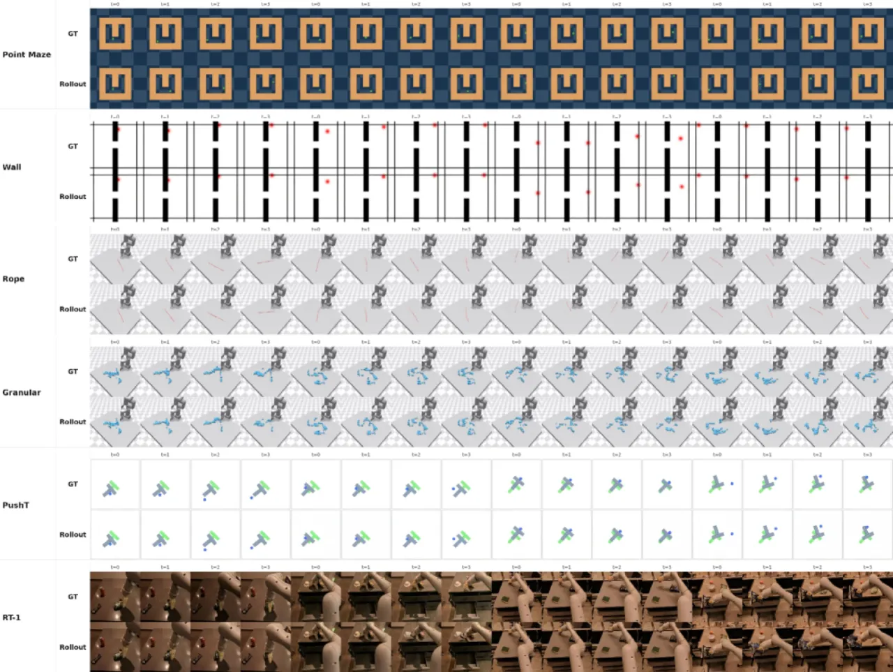
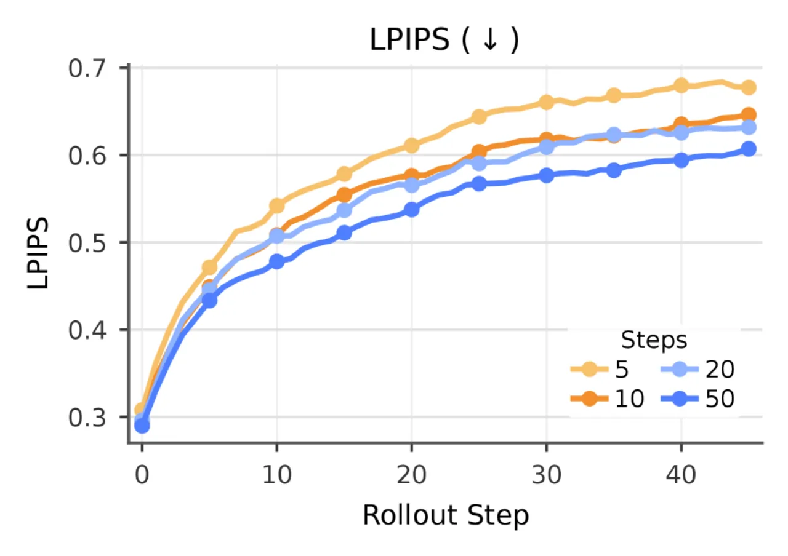
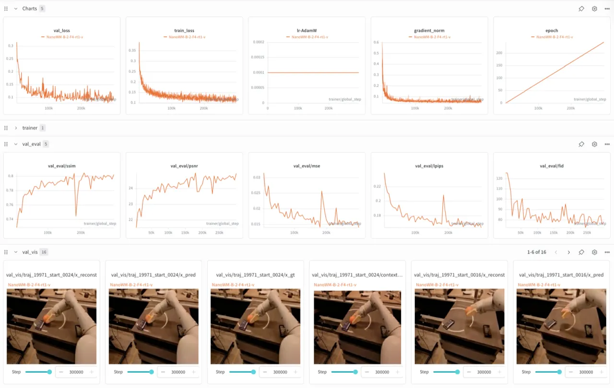

NanoWM 是一个以 diffusion forcing 为核心、模块化、极简的视频预测世界模型框架。它通过统一接口支持多种生成目标、模型规模、动作注入方式与潜在空间，并在控制、游戏和机器人等多领域上系统研究各设计选择对视频预测质量和长程自回归行为的影响。
视频预测世界模型已成为学习预测模拟器的核心范式，支撑着生成、规划与决策制定。然而，尽管工业界的交互式视频生成取得了快速进展，更广泛的研究社区仍然缺乏紧凑、可复现、易于扩展的实现来研究现代世界模型背后的设计选择。
"The broader research community still lacks compact, reproducible, and easily extensible implementations for studying the design choices underlying modern world models."

现有工业规模的世界模型对研究社区而言难以访问，研究者面临的核心挑战是：视频扩散、diffusion forcing、一致性蒸馏等技术已相当成熟，研究重心应从发明新技术转向理解设计决策。然而当前领域仍高度碎片化——不同论文使用不同数据集、训练方案和评估协议，缺乏"通用语言"。
NanoWM 的目标是打造一座"世界模型研究的巴别塔"（"a Babel tower for world model research"），让数据集、目标函数、架构和任务能够说同一种语言，从而系统比较各种设计选项。
NanoWM 以 diffusion forcing 框架为核心，通过向轨迹中不同帧分配不同噪声指标，在同一模型接口下统一表达 teacher-forced 预测、masked future prediction 和自回归 rollout。
系统对轨迹内每帧分配噪声指标（noise index）：上下文帧保持干净，未来帧获得较高噪声指标。仅通过改变噪声调度，同一模型接口便可表达：
框架支持三种扩散/流匹配预测目标：
使用基于 Transformer 的骨干网络，对潜在视频 token 进行空间 patch 投影，再经过交错的空间-时间注意力块处理。命名规范为 "NanoWM-[规模]/[PatchSize]"，例如 NanoWM-B/2 表示 Base 规模、2×2 的 patch 大小。四种规模：
框架实现了五种将动作信号注入模型的方式：
支持三种潜在空间编码：
通过在时间轴上应用滑动窗口注意力，模型可生成超越训练长度 4 倍的视频序列。长程生成时将已生成帧作为上下文帧，滑动窗口保证计算效率。
实验在 6 个任务域上展开：Point Maze、Wall、Rope、Granular（来自 D4RL、DeepMind Control Suite）、PushT 和 RT-1（机器人操作数据）。评估指标：PSNR（像素保真度）、SSIM（结构相似性）、LPIPS（感知距离）、FID（分布相似性），以及决策任务的 Success Rate。验证集使用 256 个固定 seed=42 的片段。
| 预测目标 | 噪声调度 | PSNR ↑ | SSIM ↑ | LPIPS ↓ | FID ↓ |
|---|---|---|---|---|---|
| v-prediction | cosine + ZTSNR | 23.07 | 0.760 | 0.207 | 42.27 |
| x-prediction | cosine + ZTSNR | 23.37 | 0.783 | 0.184 | 42.99 |
| ε-prediction | linear | 21.89 | 0.739 | 0.225 | 48.86 |
v-prediction 在 FID 上最优；x-prediction 在重建指标（PSNR/SSIM/LPIPS）上最优。两者均大幅优于 ε-prediction。
| 架构 | 参数量 | PSNR ↑ | SSIM ↑ | LPIPS ↓ | FID ↓ |
|---|---|---|---|---|---|
| NanoWM-S/2 | 39.8M | 22.30 | 0.739 | 0.230 | 54.95 |
| NanoWM-B/2 | 158.6M | 23.07 | 0.760 | 0.207 | 42.27 |
| NanoWM-L/2 | ~460M | 23.62 | 0.777 | 0.186 | 36.31 |
规模扩大在所有指标上均带来一致提升。
| 方法 | PSNR | FID ↓ | 参数量 |
|---|---|---|---|
| additive | 23.07 | 42.27 | 158.6M |
| adaLN | 23.19 | 43.62 | 158.6M |
| adaLN-fuse | 23.10 | 43.03 | 158.6M |
| FiLM | 23.20 | 40.62 | 172.8M |
| cross-attention | 20.82 | 51.12 | 187.0M |
| 方法 | PSNR | FID ↓ |
|---|---|---|
| additive | 26.20 | 23.89 |
| adaLN-fuse | 26.17 | 30.28 |
| adaLN | 26.09 | 26.32 |
| cross-attention | 25.95 | 28.64 |
| FiLM | 25.88 | 25.45 |
动作注入方式的优劣具有任务依赖性：FiLM 在 RT-1 上 FID 最优（40.62）；additive 在 PushT 上以最少参数量取得最佳 PSNR 和 FID。Cross-attention 在 RT-1 上表现最差（FID 51.12），尽管参数量最多。
| 潜在空间 | 骨干网络 | Latent Shape | 成功率 ↑ |
|---|---|---|---|
| SD-VAE | NanoWM-B/2 | [4, 32, 32] | 25.0% |
| Web-DINO | NanoWM-B/1 | [1024, 16, 16] | 0.0% |
| V-JEPA 2.1 | NanoWM-B/1 | [1024, 16, 16] | 0.0% |
诊断实验（真实动作 rollout 的 Latent MSE）揭示了失败根源：Web-DINO 和 V-JEPA 2.1 的动作嵌入 RMS 量级（分别为 0.00214 和 0.00129）远低于 SD-VAE（0.1119），表明语义潜在空间下模型几乎完全忽略动作信号，成为"动作无关"模型。这暗示扩散目标函数不足以强制语义表征中的动作利用。

| 数据集 | 训练步数 | PSNR ↑ | SSIM ↑ | LPIPS ↓ | FID ↓ |
|---|---|---|---|---|---|
| Point Maze | 30K | 36.74 | 0.984 | 0.019 | 9.66 |
| Wall | 15K | 34.05 | 0.994 | 0.010 | 2.64 |
| Rope | 15K | 31.63 | 0.953 | 0.056 | 35.20 |
| Granular | 15K | 26.08 | 0.917 | 0.073 | 40.05 |
| PushT | 100K | 33.19 | 0.982 | 0.016 | 13.63 |
| RT-1 | 300K | 24.36 | 0.787 | 0.180 | 35.08 |
统一训练方案在所有域上均有效。视觉/动态复杂度越高（如 Granular、RT-1），性能越低；简单仿真环境（Wall、Point Maze）表现最优。


论文明确指出"autoregressive generation inevitably accumulates perceptual errors over time"。随 rollout 步数增加，感知误差持续累积。增加采样步数可部分缓解，但无法根本解决。模型可保留粗略场景几何与摄像机运动，但精细细节随时间劣化。
Web-DINO 和 V-JEPA 2.1 等语义潜在空间在 PushT 目标条件规划任务上成功率为 0%。诊断显示模型学习到几乎与动作无关的预测，动作嵌入量级（RMS 0.00214 / 0.00129）远低于 SD-VAE（0.1119）。论文指出这暗示"扩散目标函数不足以强制语义表征中的动作利用"，需要未来工作设计适合非重建型潜在空间的目标函数。
NanoWM 专注于 diffusion-forcing 中心的 RGB 视频预测，刻意排除了面向决策表征的 JEPA 范式和 3D 结构生成范式。这使框架对某些应用（如需要语义表征的规划任务）能力受限。作者将此定位为"极简主义"的刻意选择，而非技术缺陷。
在视觉和动态复杂度较高的任务域（Granular: FID 40.05；RT-1: FID 35.08）上表现明显弱于简单仿真环境（Wall: FID 2.64；Point Maze: FID 9.66）。统一训练方案虽然有效，但并未消弭简单与复杂域之间的巨大性能鸿沟。